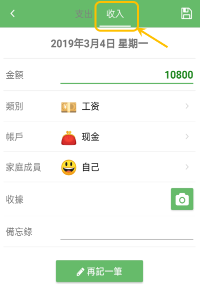

悅記
Contact
Language
English
简体中文
繁體中文
日本語
常問問題
收入該如何輸入？
在輸入畫面上方，選擇收入的類別，該記錄就會作為收入。

自己添加的類別可以修改嗎？
可以修改。
長按想要修改的類別，點擊下方彈出的菜單裡的修改即可。
可以拷貝記錄嗎？
可以拷貝已經輸入的項目。
長按列表中要拷貝的記錄，或者點擊右側的菜單按鈕，在彈出菜單裡選擇拷貝即可。
固定項目的用途是什麼？
例如固定工資等，每月都需要錄入相同內容。
利用固定項目，只需要簡單設置，就可以在指定日期自動生成記錄。為您省去很多重複的操作。
設置好的固定項目什麼時候生成記錄？
從次日起開始。
比如，2月10日（系統時間）這天，設置了兩項
「毎月10日」的固定費用A
「毎月15日」的固定費用B
那麼，
固定費用A會在3月10日自動生成
固定費用B會在當月（2月）的15日自動生成
換了新手機，如何轉移數據？
可以利用「備份及回復」功能來轉移數據。
※ 現在只能安卓手機間傳送！
※ 請在版本升級前或您需要的時候備份數據！
具體操作如下：
在
舊手機
上備份數據
「設定」→「備份及回復」→選擇一種雲端硬碟，點擊右上的按鈕，開始備份數據
在
新手機
上回復上面的備份
「設定」→「備份及回復」→選擇上面備份時指定的雲端硬碟，登錄後，選擇列表中上面操作的備份，即可回復數據。